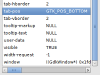
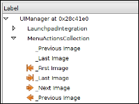
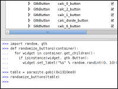
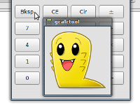

About
Developing and debugging UIs can be a pain. When something goes wrong, it's not always obvious why. You can waste hours writing logging statements only to find out that a widget is in the wrong container, or an attribute wasn't set correctly.
Developing isn't much better either. Ever spend time writing temporary code just to test a new feature, code you know you're going to throw away in an hour, and yet you end up spending the next 20 minutes debugging your temporary code? Sucks, doesn't it?
What your program really needs is a good Parasite infestation.
Parasite is a debugging and development tool that runs inside your GTK+ application's process. It can inspect your application, giving you detailed information on your UI, such as the hierarchy, X window IDs, widget properties, and more. You can modify properties on the fly in order to experiment with the look of your UI.
But you can go further than that. You can actually modify your application logic while the program is running! Parasite includes an embedded Python shell that lets you write new code that directly interacts with your application's UI, regardless of the language the application is written in. Create new dialogs, attach temporary signal handlers to buttons, test out new logic, and gather additional debug information.
If you've used Firebug, it's sort of like that, but for GTK+ applications.
Parasite is available under the MIT license.
Features
- Attaches to GTK+ applications.
- Display the entire widget hierarchy of any window.
- Click a widget to inspect it.
- Allows modification of the properties for any widget.
- Python shell for dynamic scripting and inspection of applications.
- Easily enable GTK+ graphical update debugging.
- Displays all GtkActions registered in a program.
Usage
Parasite is pretty easy to use. Start off by launching with an application by doing the following:
$ GTK_MODULES=gtkparasite appname
The Parasite window will pop up immediately, followed by the application window.
Click the "Inspect" button and then click anywhere in your application's UI to load the widget tree for that window and focus in on the selected widget. You should then be able to browse around the widget tree.
The properties for the selected widget appear on the right-hand side of the Parasite window. Many properties can be modified (nearly anything other than pointer addresses) by clicking on the property value. You'll either be able to type in a new value, or select from a pop-up list.
Toggle "Show Graphic Updates" to see debug rectangles any time part of your UI redraws. This can be used to help optimize drawing performance of a widget.
The Python shell is located at the bottom of the screen. It works like a standard Python shell. You can import modules you need (such as "gtk") and write code to manipulate the widgets.
A special "parasite" module is imported for you that provides a "gobj" function for converting a pointer address for a widget into something you can use in the Python shell. For example:
>>> widget = parasite.gobj(0xDEADBEEF)
You can get the pointer addresses from the "Pointer Address" column in the widget tree, or from right-clicking an item in the widget tree and choosing "Send Widget to Shell."
You can then use any PyGTK functions on the widget.
Screenshots
|  |  |
|  |  |
{kind=link}
{kind=link}
{kind=link}
{kind=link}
We also have a screencast demoing and explaining Parasite.
Download
We don't have a release out just yet, but you can download the latest bleeding edge tarball.
You can also clone the Git repository by running:
$ git clone git://github.com/chipx86/gtkparasite
FAQ
- Why "Parasite?"
- Parasite runs inside of another application and allows for manipulating the application. We thought the name was appropriate. Bonus: We got to create a cute little logo and draw him crawling on boxes. Much better t-shirt opportunities.
- Will there be t-shirts?
- Yes, I think that's something we just have to do.
- Why doesn't the Python shell work with GIMP?
- GIMP defines a GtkScaleButton type that conflicts with GTK's own GtkScaleButton. This isn't a problem when running GIMP itself, since it never uses GTK's, but we use PyGTK and that does register GTK's version. This causes a conflict that leads to deadlocks. So we had to disable the Python shell. A bug report has been filed with GIMP on this.
Development
Parasite is hosted on GitHub.
If you want to contribute, feel free to fork the repository on GitHub and then propose patches.
You can report bugs on our bug tracker.
In time, we'll have a Review Board server set up that you can upload patches to.
Contact Us
Parasite is developed by Christian Hammond and David Trowbridge.
You can also reach us on our mailing list.